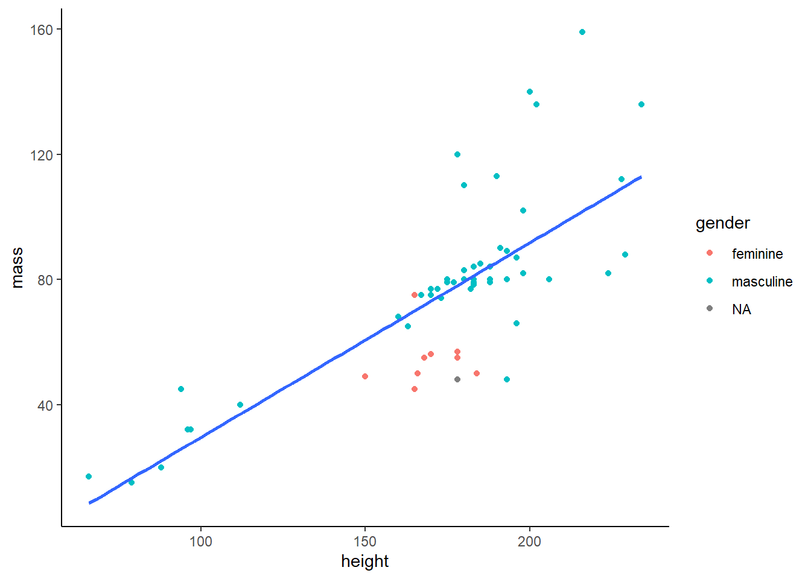

Visualization
libary(ggplot2) is invoked automatically when you invoke library(tidyverse). So you don’t have to load both. Loading tidyverse is a meta package that includes many other useful packages, e.g. dplyr.
ggplot2 is a visualizaton package that helps create stunning visualzations based on the grammar of graphics. The documentation is installed with the package. However, the online documentation is convenient and easy to read.
ggplot2 syntax
library(tidyverse)
# library(ggplot2)
my_df |>
ggplot(aes(x = my_x_var, y = my_y_var)) +
geom_point() +
geom_line()example

You can apply multiple layers to a gpplot2 object. There are many geoms to choose from enabling scatterplots, bar graphs, histograms, boxplots, etc. The grammar promotes reproducible workflows so you can generate visualizations consistently and transparently.
More information
Please see the introductory Rfun videos about ggplot2. Check out Rfun’s shareable code, slides, datasets, and exercises.
See Also